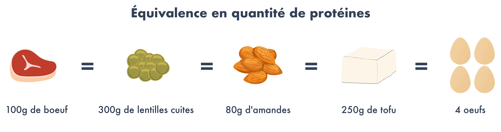
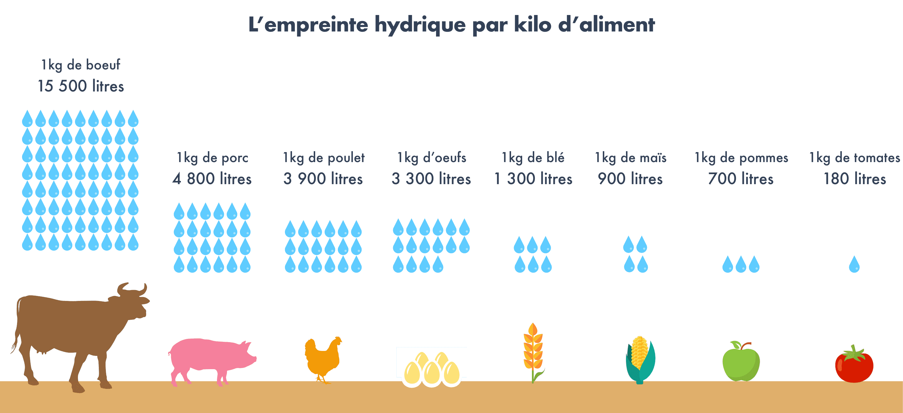

Le régime végétarien séduit de plus en plus de monde : 4% des français seraient déjà végétariens. Mais, ce mode d’alimentation est en proie à des débats houleux entre ceux qui y voient l’alimentation du futur, et ceux qui au contraire le considèrent comme un régime dangereux conduisant à des carences et à une remise en question de nos traditions gastronomiques.
Il est tout d’abord nécessaire de bien comprendre ce qui se cache derrière ce terme. Une personne végétarienne ne consomme pas de chair animale. Elle ne mange donc pas de viande ni de poisson, mais elle peut consommer des oeufs ou encore des produits laitiers. Il faut distinguer le végétarisme du véganisme, qui lui exclut tout produit issu des animaux : il bannit donc les oeufs, les produits laitiers (yaourts, fromage, etc.) ou encore le miel. Cet article traite essentiellement du régime végétarien, et non pas du régime végétalien.
Alors, est-il possible de suivre une alimentation végétarienne et d’être en bonne santé ? Voici notre décryptage sur le sujet, réalisé avec l’aide du nutritionniste Anthony Berthou.
Il n’y a pas que la viande et le poisson qui contiennent des protéines !
C’est l’un des arguments qu’on entend le plus souvent : les végétariens auraient des carences en protéines, car les protéines se trouvent dans la viande et dans le poisson (voir notre article sur les protéines). Or, les végétariens peuvent consommer des oeufs et des produits laitiers comme des yaourts ou du fromage, qui sont de bonnes sources de protéines. Il existe par ailleurs de nombreuses sources de protéines végétales : soja, haricots rouges, pois chiches, lentilles, amandes, noix, noisettes, riz complet, quinoa…

Les protéines sont constituées d’acides aminés, qui sont en quelque sorte des “mini-protéines” qui jouent un rôle fondamental dans le fonctionnement de notre organisme : elles ne servent pas uniquement à fabriquer du muscle, elles jouent aussi un rôle indispensable dans la défense de notre système immunitaire ou encore dans le fonctionnement de notre système nerveux. Certains acides aminés peuvent être fabriqués par notre organisme à partir de notre alimentation, mais d’autres doivent être apportés par l’alimentation car notre organisme ne sait pas les fabriquer : ce sont les 8 acides aminés essentiels (il en existe 9 chez l’enfant). La référence historique en termes d’acides aminés est l’oeuf : il contient l’ensemble des 8 acides aminés essentiels dans des proportions idéales.
Hormis l’oeuf, aucune protéine animale ni végétale ne possède à elle seule un apport optimal en acides aminés essentiels. Elles présentent toutes une teneur limitée en certains acides aminés essentiels : c’est la complémentarité de ces protéines qui permet d’assurer un apport en acides aminés essentiels dans les proportions idéales. Parmi les protéines végétales, les céréales présentent par exemple une teneur limitée en lysine, et les légumineuses manquent de méthionine.

Dans un régime végétarien, il est tout à fait possible de combiner les sources de protéines végétales afin d’assurer un apport optimal en acides aminés essentiels. Cette combinaison peut se faire en sein de la journée et pas nécessairement au sein du même repas. Ainsi, l’association de céréales et légumineuses permet généralement d’assurer un apport complet (exemple : semoule et pois chiche, riz et lentilles, maïs et haricots rouges, etc.).
Par ailleurs, la croyance populaire veut que le sportif consomme beaucoup de viande pour combler ses apports en protéines. Or, il est également tout à fait possible de concilier régime végétarien (voire végétalien/vegan) avec la pratique sportive. Pour en savoir plus sur ce sujet, vous pouvez consulter l’article d’Anthony Berthou Peut-on être végétarien ou vegan et sportif ?
Les végétariens, tous en carence de Fer et de vitamine B12 ?
Un autre argument en défaveur de l’alimentation végétarienne qui revient souvent concerne les carences en Fer, qui se trouverait principalement dans la viande. Or, il faut savoir qu’il existe deux types de fer :
- le fer héminique : il est apporté par les produits d’origine animale (hormis l’oeuf), notamment par la viande rouge. Il est facilement absorbé par l’organisme. Cependant, il est nocif pour l’organisme en quantité élevée : l’excès de fer héminique conduit au développement des radicaux libres, qui sont en cause dans l’apparition de cancers.
- le fer non héminique : il est principalement apporté par les végétaux et par les oeufs. Le défaut du fer non héminique est qu’il est moins bien assimilable que le fer héminique, c’est-à-dire qu’il est moins facilement absorbé par l’organisme. Parmi les végétaux les plus riches en fer non héminique, on trouve la spiruline, les légumineuses, le tofu, le quinoa, les noix, les raisins secs, les graines de sésame/tournesol, l’avocat.
L’idéal est de s’assurer un bon apport en fer non héminique tout en veillant à favoriser son assimilation. Pour cela, il est recommandé de :
- favoriser l’apport de vitamine C qui augmente l’absorption du fer : on en trouve notamment dans les fruits et légumes crus comme le poivron, le brocoli, le kiwi ou encore les agrumes.
- ne pas consommer de thé pendant et autour du repas car les tanins qu’il contient perturbent l’absorption du fer.
- faire tremper les légumineuses au moins 12h avant de les cuire : cela permet de neutraliser l’acide phytique qu’elles contiennent et qui empêche la bonne assimilation du fer
Enfin, contrairement aux idées reçues, les végétariens qui consomment des oeufs et produits laitiers ne manquent pas non plus de vitamine B12. En effet, cette vitamine est abondante dans les produits d’origine animale : on la retrouve donc effectivement dans le viande ou le poisson, mais aussi dans les oeufs et les produits laitiers, qui peuvent être consommés dans le cadre d’un régime végétarien. En revanche, il est conseillé aux personnes qui ne consomment aucun produit d’origine animale (régime végétalien/végan) de réaliser une prise de sang et si besoin de prendre des compléments alimentaires ou des aliments enrichis en B12, comme la levure maltée et certains laits végétaux. Pour en savoir plus, vous pouvez consulter l’article d’Anthony Berthou sur la vitamine B12.
Le régime végétarien serait-il en fait LE régime santé par excellence ?
Une étude de 2013 de l’université d’Oxford montre que les végétariens ont en moyenne 32% de risques en moins d’être victimes de maladies cardio-vasculaires. En effet, le régime végétarien exclut la consommation de poissons et de viandes, qui sont des aliments naturellement riches en acide gras saturés et en oméga-6 (en particulier les viandes rouges et transformées), que nous consommons aujourd’hui en excès par rapport à nos besoins (voir notre article sur les graisses). Par ailleurs, il a été démontré que les risques de cancer du côlon et de cancer du sein augmentent largement avec une consommation quotidienne de viande et de charcuterie. La viande transformée (jambon, saucisses, steacks hachés, surimi, etc.) a même été classée comme “cancérigène” et la viande rouge comme “probablement cancérigène” par l’OMS (Organisation Mondiale pour la Santé) en 2015.
Chez les végétariens, la viande est remplacée par des légumes, légumineuses et céréales : des aliments pauvres en graisses et naturellement très riches en fibres. Or, notre consommation de fibres est souvent insuffisante. Pourtant, les fibres jouent un rôle essentiel afin de réguler notre glycémie (voir notre article sur les glucides) et d’éliminer certains éléments toxiques que nous ingérons comme les pesticides. Une alimentation végétarienne, riche en fibres et en antioxydants (présents en abondance dans les fruits et légumes) permet donc de prévenir les risques de maladies cardio-vasculaires et de cancers.
Pour autant, suivre une alimentation végétarienne ne suffit pas à être en bonne santé si elle est suivie n’importe comment. Une alimentation riche en céréales sucrées pour le petit-déjeuner, chips, sodas, pain de mie, ou encore produits transformés pleins d’additifs étiquetés “végétarien” ou “vegan” est loin d’être recommandable. L’alimentation végétarienne doit être suivie de manière équilibrée pour éviter les carences et favoriser des apports optimaux en nutriments. Ne vous laissez donc pas avoir par le marketing qui profite de l’attrait pour ce mode d’alimentation pour afficher “végétarien” ou “vegan” sur des produits qui n’ont dans tous les cas aucune raison de contenir des ingrédients d’origine animale.
Et si le régime végétarien pouvait sauver la planète ?
Selon la FAO (Food and Agriculture Organization), la consommation mondiale de protéines animales a doublé en moins de 50 ans et devrait encore augmenter de 70% pour nourrir l’ensemble de la population en 2050 si nos choix alimentaires n’évoluent pas. Cette hausse est essentiellement observée dans les pays développés et dans les pays en développement : la consommation de viande en Chine a par exemple été multipliée par 8 en moins de 40 ans. Par ailleurs, 40 % des céréales cultivées dans le monde sont destinées à alimenter le bétail.
Grâce aux organisations internationales et aux ONG, on sait aujourd’hui que l’élevage industriel fait partie des secteurs les plus destructeurs de la planète. C’est la production industrielle de viande en masse qui pose problème, car elle nécessite beaucoup d’espace (déforestation), de nourriture (pesticides, engrais antibiotiques), d’eau (épuisement des ressources) et de transports (CO2).
Par exemple, pour produire 1kg de viande bovine, il faut environ 15 500 litres d’eau, alors qu’1kg de soja ne demande que 1 800 litres d’eau.

Toujours selon le FAO, l’élevage des animaux nécessaires à l’alimentation est responsable de 15% des émissions totales de gaz à effet de serre, soit davantage que les transports. Les éructations des ruminants sont également responsables de 37 % des émissions de méthane. Or, le potentiel de réchauffement du méthane est 23 fois supérieur à celui du CO2. Le plus polluant est l’élevage des ruminants (notamment les bovins : boeufs, vaches, veaux) qui représente à lui seul 50% des émissions de méthane.
Selon un rapport des Nations Unies, la diminution de la production d’élevage est à considérer comme une des meilleures stratégies pour stopper le réchauffement climatique et la déforestation.
Pour en savoir plus sur le lien entre protéines animales et environnement, vous pouvez consulter l’article d’Anthony Berthou : http://www.sante-et-nutrition.com/proteines-animales-environnement/
Comment devenir végétarien quand on est accroc à la viande ?
Si sur le papier, on peut être convaincu, dans la pratique c’est souvent beaucoup moins simple et difficile à mettre au quotidien. C’est pourquoi est né assez récemment ce qu’on appelle le flexitarisme, ou semi-végétarisme, qui est une version plus flexible du régime végétarien. Un flexitarien consomme de la viande et du poisson mais de façon beaucoup plus occasionnelle et privilégie la qualité à la quantité. Le régime flexitarien permet de limiter voire d’exclure la viande transformée, qui est la plus problématique, et de favoriser les morceaux de viandes de qualité (élevage local, animaux élevés en plein air, pas d’utilisation d’OGM, etc.).
Quant au pescétarisme, il exclut la viande mais conserve les poissons et des fruits de mer. Il permet ainsi de bénéficier des bienfaits des poissons et autres produits de la mer riches en Oméga-3, des acides gras très bénéfiques que nous ne consommons pas suffisamment aujourd’hui.
Aujourd’hui, ces alternatives séduisent de plus en plus de français soucieux de leur santé et de l’environnement, mais pour qui le végétarisme est encore trop contraignant. Ces alternatives sont une bonne première étape pour évoluer vers une alimentation plus végétale. Car, réduire sa consommation de viande n’est aujourd’hui pas un simple effet de mode : il s’agit d’une véritable nécessité sanitaire et environnementale.
- Diallo A, Deschasaux M, Latino-Martel P, Hercberg S, Galan P, Fassier P, Allès B, Guéraud F, Pierre FH, Touvier M. Red and processed meat intake and cancer risk: Results from the prospective NutriNet-Santé cohort study. Int J Cancer. 2018 Jan 15;142(2):230-237. doi: 10.1002/ijc.31046. Epub 2017 Oct 16. PubMed PMID: 28913916.
- WHO, 2007, Protein and amino acid requirements in human nutrition: report of a joint FAO/WHO/UNU expert consultation, World Health Organisation, technical report series, no. 935
- Springmann, M., Godfray, H. J. C., Rayner, M., Scarborough, P. (2016), Analysis and valuation of the health and climate change cobenefits of dietary change, PNAS, vol. 113 no. 15 4146–4151, doi: 10.1073/pnas.1523119113
- Crowe FL, Appleby PN, Travis RC, Key TJ. Risk of hospitalization or death from ischemic heart disease among British vegetarians and nonvegetarians: results from the EPIC-Oxford cohort study. Am J Clin Nutr. 2013 Mar;97(3):597-603. doi: 10.3945/ajcn.112.044073. Epub 2013 Jan 30. PubMed PMID: 23364007.
- Davey GK et al. EPIC-Oxford: lifestyle characteristics and nutrient intakes in a cohort of 33 883 meat-eaters and 31 546 non meat-eaters in the UK. Public Health Nutr. 2003 May;6(3):259-69.
- OMS : https://www.who.int/features/qa/cancer-red-meat/fr/
- The Water Foodprint Network : https://waterfootprint.org/en/water-footprint/product-water-footprint/water-footprint-crop-and-animal-products/
En tant que végétarien j apprécie beaucoup évidemment et j espère que nous serons pour les animaux et la planète de plus en plus nombreux
J ai eu l impression un moment que ce message m était adressé
Félicitations
Roger
Impec ,continuez comme cela . J’utilise votre site à chaque nouvel achat . Bientôt végétarien , achat le plus au producteur , proximité .
Moi qui suis végétarienne merci pour ce bel article bien explicite et pour lequel je me suis retrouvée
Je trouve que vous êtes un peu limite car vous n’êtes pas médecin. Vous ne parlez pas des besoins spécifiques des femmes enceintes et des enfants (fer et omega 3) . Un médecin est toujours de bon conseil dans ces cas précis et vous n’en parlez pas ! SVP écouter le Dr Jacques Fricker, médecin nutritionniste (Paris), praticien attaché du service d’endocrinologie, diabétologie et nutrition de l’hôpital Bichat-Claude Bernard : https://www.jim.fr/medecin/videos/e-docs/_regime_sans_sans_danger__172479/document_jim_tube.phtml
Bravo Roxane ! Enfin un peu de cœur et de conscience dans ces discussions ! Réveillons – nous : le souci des autres habitants de cette planète est un ALTRUISME radical . Il ne devrait pas être l’apanage d’une toute petite minorité d’entre nous .
J’ai 67 ans je pense être en bonne santé, vos observations sont intéressantes il y a longtemps que j’ai compris qu’une alimentation variée et de qualité sont la clef pour
une vie harmonieuse. Il faut fuir les produits industriels les boissons sucrees et privilégiez
Les fruits les légumes le pain complet. Vos articles sont toujours pertinents et ont le mérite de la réflexion.
Est ce que on peut manger du maïs est ce que c est bon pour la santé. J ose pas en manger.merci de votre reponse
TRES BON RÉSUMÉ DES DANGERS DE LA CONSOMMATION DE VIANDE A OUTRANCE.
SI VOUS ALLEZ FAIRE UN TOUR DANS LES ABATTOIRS VOUS SEREZ DÉGOÛTÉ DE VOIR LA SOUFFRANCE ANIMALE OCCASIONNÉE POUR L ‘ALIMENTATION !!!!!!
JE SUIS DEVENUE PECSÉTARISME DEPUIS LONGTEMPS ET A 56 ANS JE NE SOUFFRE D ‘AUCUNES CARENCES 😉
ALORS SI VOUS AIMEZ LES ANIMAUX COMME MOI NE LES MANGER PAS. ……
Ouvrez les yeux : les poissons aussi souffrent ! Mille milliards de victimes par an, au bas mot . On les compte en tonnes, alors que ce sont des individus . Allez voir sur You tube la petite vidéo de Sébastien Moro « Qui sont les poissons ? » Érudit et drolatique. Vous ne regarderez plus jamais votre poisson rouge du même œil !
Et quand vous coupez vos légumes, que vous les hachez, les massacrez… Eux aussi souffrent !!
Quand vous ramassez une carotte, vous l’arracher violemment à la terre, vous l’empêchez de vivre ! De plus vous condamnez à mort les animaux qui auraient pu s’en nourrir…
Bref des raisonnements débiles comme celui-là, on peut facilement en trouver pour justifier tout et n’importe quoi.
Qu’il soit nécessaire pour notre santé et celle de la planète de diminuer notre consommation de viande tout à fait d’accord.
Dire que ceux qui en mangent sont des meurtriers, des « bouffeurs de cadavres », etc c’est de l’extrémisme.
Des études ont prouvé que certains végétaux sont capables de communiquer pour changer leur comportement en cas d’agression ‘ex un herbivore qui se nourrit). Donc ils souffrent aussi. Vous allez arrêter aussi de manger des végétaux ?
Très bon article complet et bien étayé par de nombreux tableaux 😊
Ma fille m’a fait connaître votre application que j’utilise depuis 3 mois. Cela prend du temps mais cela m’a permis de faire un grand tri dans mes achats et de ne garder que les produits bons pour notre santé. Je suis consternée de voir que les plus grandes marques utilisent des colorants et additifs toxiques voire cancérigènes alors qu’ils ont les moyens de proposer le meilleur pour leurs clients idem pour les cosmétiques. Je privilégie la qualité à la quantité et les circuits courts. Je bannis les plats préparés et industriels. A bientôt 60 ans, je suis bien dans ma peau et je conseille à tous, pour la Planète et pour sa famille et ses amis, de tester Blomy comme une bonne résolution pour 2019 ! D’ailleurs Très Belle Année à tous !
Merci pour ces précieux renseignements! Je cherche un régime hypocaloriques, végétarien. Le manque d’info se situe surtout au niveau des équivalences : le tableau est trop étriqué, même s’l a le mérite d’exister!
Végétarienne depuis très longtemps, lorsque je suis tombée enceinte, tout le monde me disant que j’allais avoir un bébé tout petit et chétif… mon fils faisait 4kg230. En le voyant très charpenté, le pédiatre a dit qu’il avait la carure d’un rugbyman.
Mais bien sûr ! À bas les préjugés meurtriers !
Merci pour tous ces articles bien documentés dans votre bog. C’est toujours très intéressant à lire. Merci pour tout ce travail pour nous utilisateurs, c’est très enrichissant.
Remerciements pour tout cela
Article très bon et très développé, compréhensible et très intéressant et je ne suis pas allée jusqu’au bout de l’article car c’était assez long mais en tout cetais très instructif ! Merci beaucoup et bravo !
ça c’est de l’info !!! et tout est clair pour se lancer en totale confiance : BRAVO
reste à voir si les chiffes annoncés sont pertinents car c’est toujours là le problème, et les polémiques vont à grands pas pour les personnes pas d’accord (voir commentaire)
Article très intéressant comme bien souvent sur le blog blomy !
Merci pour ces précisions bien utiles.
je ne suis pas allé au bout de l’article car l’énorme erreur à propos de la quantité d’eau nécessaire à produire 1kg de boeuf me fait dire que si le reste de l’article est aussi sérieux ça ne vaut pas la peine d’être lu. Le chiffre annoncé est complètement erroné. La réalité est de l’ordre de 50 L. Le chiffre que vous avancez inclus la pluviométrie qui serait de toutes façons absorbée par la prairie.
Cet article est complet et à répondu a toute les questions que je me posais ! Merci
Très opportun.
bonjour,
j’ai élevé mes 3 enfants dans les années 80 avec un régime végétarien, ils ont eu une croissance harmonieuse et nous faisions de temps en temps des contrôles sanguins qui étaient toujours corrects, par contre nous étions très attentionnés à notre nourriture, que du bio riche en légumes et en fruits et les apports de protéines végétales et animales (oeufs), nous sommes tous encore végétariens et nous ne nous en portons que mieux ! Mes enfants ont eu une excellente santé pendant leur enfance comparativement à leurs copains et copines et même leurs cousins.
Désolé j’aime bien votre application mais, je n’adhère pas du tout à votre discours radicalement végétarien. Manger de la viande n’est pas cancérigènes.ou pas plus que manger des légumes du commerce imprégnées de pesticides et de fongicide ou cultivé dans un bloc de laine de roche.et sur l’élevage il faut savoir que 60%de la production part à la poubelle par ce que les gens mange que du blanc de poulet et du jambon blanc alors achetez ou élevez vos poulet cultivez ou achetez vos légumes chez votre maraîcher local et vous serez en bonne santé et vous pourrez partager c’est méthodes de travail et créer du lien social
Merci pour cet article factuel et clair, s’appuyant sur des données scientifiques.
Elles recoupent bien des informations que j’ai collectées ailleurs.
Vous m’avez appris que je pratique, sans le savoir jusqu’à maintenant, le flexitarisme.
Et je respecte volontiers les autres « croyances » alimentaires qui s’expriment dans les commentaires.
Je n’ai pas perçu d’injonctions à manger comme ci ou comme ça ! Juste des faits relatés et des sources scientifiques.. À chacun d’aller plus loin pour avoir 1 connaissance des conditions de cultures et d’élevage..
C’est 1 fait il faut mieux être locavore et biovore… En plus d’avoir une alimentation équilibrée.
Je constate la fureur de certains.. Comme si on leur arrachait quelque chose..
C’est toujours surprenant !
Bonjour et merci pour l’article,
Tout en étant plutôt pour, il me vient quelques questions, peut-être que ça a été dit dans les 500 commentaires précédents.
Si 100g viande = 4 oeufs, on ne peut pas comparer 1kg de viande avec 1 kg d’oeufs. Vu qu’ils faut 200g d’oeufs pour faire 100g de viande, la consommation d’eau, toujours à l’avantage de l’oeuf, voit malgré tout son avantage diminuer…
L’autre problème peut aussi être pour la santé ou pour l’obésité? 300g de lentilles font 336 kcal, 100g de boeuf 150 calories… pourquoi doubler l’apport calorique? Pareil pour les oeufs, avec des problèmes de cholestérol que peut poser le fait d’en manger trop. Manger tout le temps des légumes en excès? On en parle de la surdose de pesticides par rapport aux carnivores?
Pas évident comme question en tout cas
chacun mange effectivement ce qu’il a envie…
Chacun mange effectivement ce qu’il a envie…
Personnellement, je ne mange plus du tout de viande depuis 1998 à cause des atrocités faites aux animaux . A l’époque , il n’y avait pas de médiatisation …
Du poisson que 2 fois par semaine. J’ai 58 ans. Je n’ai aucunes carences . Je ne tombe pas plus malade que ceux qui en mangent tous les jours en croyant que c’est nécessaire…
Mes deux filles sont devenues végétariennes depuis maintenant dix ans et vont très bien..Ce n’est pas pour suivre ce phénomène de mode, juste pour ne pas manger une bête morte dans de terribles conditions..
Pas d’arrêts maladie, sports sans tomber dans les pommes…
Un grand merci pour votre éclairage approfondis et actualisé sur l’un des sujets essentiels à la vie; la nôtre et celle de notre planète.
Cet enseignement devrait arrivé à l’école pour y être assimilé dés le plus jeune âge, au même titre que l’apprentissage de la langue, là où l’intérêt individuel profite à l’intérêt de tous.
Très intéressant
y a t il un moyen d’imprimer facilement pour diffuser
@Michel Juloski : vous avez des liens pour partager sur Twitter et Facebook, pour le reste vous pouvez toujours copier/coller. Mais quitte à diffuser leur travail, ayez au moins l’honnêteté de les citer, voire la générosité de leur faire un don si vous appréciez vraiment.
Excellent article, très équilibré (c’est le cas de le dire). Merci beaucoup.
On commence enfin à voir arriver ce type d’explication. Jusqu’à aujourd’hui, on avait surtout droit aux raisonnements hyper réducteurs du type : pas de viande ni poisson => pas de protéines (pas les mêmes) , pas de B12, pas d’acides aminés,… => no future.
Continuez.
J’ai toujours eu de la viande dans mon assiette étant petite fille de berger c’était comme cela trois fois par semaine sans compter le gibier et en tant que fille de pêcheur j’ai eu de la chance de goûter tous les jours aux produits de la mer ,je ne pense pas un jour me priver de viande et poisson. Chacun mange ce qu’il veut et personne ne va me dicter ma façon de manger . En ce moment c’est la cochonnaille et croyez moi ont ne fait pas la fine bouche
Mais bien sûr ! À bas les préjugés meurtriers !
quel est ce programe vegetaren? autre?merci
Moi je pense qu’il faut manger de tout modérément !
Encore un article dicté par les bobos ecolo complètement déconnectés de la vie. ..regardez la vie ds nos campagnes. ..après vous pourrez critiquer. ..enlever vos oeillères et arrêtez d ecouter ces discours anti viande. ..moi je mange de la viande issue de circuits courts. …élevé et abattu ds des conditions de hygiène d irréprochable. …allez faire un tour où sont abattues les bêtes pour nos amis musulmans et juifs. …après on en discutera !!!
n’importe quoi anonyme, le discours bobo écolo n’a rien à voir avec ceux qui ont décidé de se passer de viande parce qu’ils estiment que cette chose dans leur assiette et bien ils n’ont pas envie de la manger c’est tout, ça les dégoute
Moi aussi j estime les animaux. .d ailleurs j en eleve. ..arrêté de vouloir tuer notre métier. …vous verrai quand ils n y aura plus un seul paysans en France et que la famine reviendra. .ç est trop facile de dictée ce que l on doit manger sous prétexte de sauver la planète. …les premiers à l entretenir et à tout faire pour la sauver sont les paysans
Propagande « végétariste » très à la mode! Vous oubliez de dire que les protéines végétales sont plus thermolabiles que les animales et de toute façon moins bien absorbées par l’organisme. S’il y a autant de protéines dans 100 g de lentilles que dans un steak, pour les raisons ci-dessus il faut absorber 500g de lentilles pour avoir l’équivalent protéique. Bonjour l’estomac! En ce qui concerne le fer, il est difficile pour certaines femmes non ménopausées de couvrir leur besoin avec le fer végétal. 7% des végétariens sont carencés. (40% des « vegan »)
Par ailleurs on ne sait pas encore exactement si le régime exclusivement végétarien ne perturbe pas le vieillissement cérébral. C’est le carnivorisme (ou au moins l’omnivorisme) qui a permis le développement des capacités intellectuelles ne serait-ce que parce que le carnivore passe seulement 50% de son temps à se nourrir contre 80% pour les herbivores. Sans être opposé à une diminution de la consommation de viande, je pense que votre article mériterait d’être plus nuancé.
Très bonne synthèse
et
encore un article de référence
Merci
Bravo. Laissons les carnistes à leurs idées primitives. La France est « malheureusement » culturellement accro à la viande, au foie gras…et l’industrie de la viande puissante 🙁
Hélas ! Mais le temps viendra … Tout évolue . Même les abrutis égoïstes peut-être ? Sinon on se passera d’eux . La Révolution végétale est en marche !
Tiens un intégriste !!!!
Réussir a caler « abrutis égoïstes » et « Révolution végétale » dans la même phrase, il faut être vraiment idiot, heureusement que vous êtes à la retraite 😉
Je consomme pour ma part des poissons gras et des fruits de mer pour les Omega 3 et privilégie la volaille à la viande rouge et en consomme de façon modérée. je cuisine régulièrement des pois chiches ….. bref tout est dit dans cet article pour bien manger.
Ayant fait un régime watts watcher ils nous ont conseillé de manger viande midi et soir
Pour maigrir moi je la mange que le midi et parfois pas
Pourquoi c’est difficile de nourrir son corps pour vivre
Depuis que je suis née je ne consomme pas de viande, n’importe quelle viande, je l’a vomie.
et portant j’ai grandie (1.70m) Il suffit de manger des œufs, des légumes,des fruits frais et des fruits secs., du miel, faire une cure de gelée royale des que l’hiver débute. c’est simple
J’ai lu cet article avec un vrai plaisir et vous félicite pour la clairvoyance de celui ci.Je l’ai transmls à plusieurs de mes connaissances,une diffusion plus importante permettra peut être,a long terme de sensibiliser davantage l’importance de notre alimentation.
Je croyais que blomy etai t une application intelligente mais si vous diffusez un tel article c’est que vous avez succombé à la mode et au lobbies de ceux qui veulent vous faire avaler de nouveaux produits. Les prétendues études qui mettent en avant la nocivité de certains aliments n’ont rien de scientifique. Je prendrais l’exemple du lait. Il a été annoncé tour à tour bénéfique puis nocif puis à nouveau bénéfique au gré des quantités de lait à écouler. Alors de grâce cessez de prêcher pour tel ou tel aliment vous êtes victimes ou complices des industriels qui les produisent. C’est honteux.
Bravo pour votre analyse. Laissons les minorités a leurs croyances….
Et bah laisses nous à nos croyances! Arrête de mettre des commentaires inutiles! Parce que oui les végétariens sont en minorité mais si vous continuez à manger autant de viandes il n’y aura plus d’animaux et la seule viande que vous aurez sera celle des insectes ( oui dans des produits où c’est marqué « à base de chère animale » , c’est en réalité de la chère d’insectes ).
surtout que le problème de la pollution lié a l’élevage provient du type industriel.
le problème est surtout lié à la qualité de ce que nous consommons.
les amandes par exemple dans certains pays où la culture est faite sur des zones gigantesque est une catastrophe. emploi de produit phytosanitaire a outrance etc.
ne parlons même pas des OGM dans le mais, le blé etc.
des gens meurent pour l’avocat, et les tomates espagnoles sous des KM2 de baches plastiques bombardées d’insecticides.
bref
mangez moins de merde en quantité et proscrire les produits industriels pour se rapprocher d’éleveurs et d’agriculteurs passions est la solution.
si vos convictions vous mènent à être vegan ou végétarien tant mieux pour vous.
mais subir la mode et dire aux autres qu’ils ont torts. foutaises.
bientôt on s’apercevra que les végétaux communiquent et il faudrait bouffer des cailloux vendu par nos chers industriels.
D’accord avec toi Laurent. …mangeons directement l herbe ds les près. .ça va être plus simple. ..allé tous à 4 pattes 😂😂😂😂
hi hi hi merci de me faire rire.mais j’en ai marre de manger des belettes surtout toutes les souffrances que l’on voient .
Les produits laitiers ont été promu depuis les années 70/80 de part des montagnes de beurre que l’Europe de l’époque ne savait pas écouler … Ils avaient même inventé « le beurre de noel » 🙁 En 82/83, l’Europe à imposé des quotas laitiers qui ont disparu en 2010 environ. Mais dans cette période, les prix ne tenaient pas et les promotions du lait « les produits laitiers c’est vos amis pour la vie » etc …. n’ont cessé.
Le problème principal est que quand « une vache » ou plutôt une machine à lait produit plus de 10 000 litres de lait par an … Ce n’est plus du lait mais du maîs, du soja des sous et co-produits et autres aliments ultras performants et ultra traités que vous ingérez ; rien a voir avec du lait de vache laitiére nourrie à l’herbe et au foin qui produit 3000 à 4000 l/an
Sans parler des produits laitiers ultra transformés qui n’ont plus de laitier que le nom 🙁
Les intolérances ou allergies au lactose sont surtout des intolérances ou allergies aux produits laitiers industriels …. Et c’est la méme chose pour bcp de produits agricoles
👍🏻
Merci pour votre message, il est clair il est juste à « mon sens « .
Un grand merci pour cet article, une nouvelle fois, riche et pédagogique.
L’article est très intéressant mais il tait complètement les ravages à grande échelle de l’agriculture (déforestations, pesticides, engrais chimiques) alors qu’il blame l’élevage qui pourtant – lorsqu’il est réalisé en plein air – peut au contraire favoriser la diversité écologique. Pour quelle raison ?
Selon moi, il faut rajouter un chapitre à cette article pour compléter le raisonnement qui en l’état n’est pas convaincant.
Bonjour, vous avez raison pour les méfaits de l’agriculture intensive mais n’oublions pas que près de 50% des surfaces servent à nourrir les animaux d’élevages intensifs.
Pour ceux qui veulent continuer à manger de la viande, préférer comme vous le dites, un élevage de plein air respectueux de la viande condition animale.
très bon article , argumentaires précis, merci car il laisse la réflexion libre
Bonjour,
Je prends plaisir à lire vos précieuses informations pour apporter le meilleur carburant à mon organisme. Vos articles me rappellent sans cesse que les nutriments de notre assiette sont les principaux garants d’une santé optimale. Merci pour ce partage 🙏
merci Blomy pour toutes ces infos, je mange peu de viande et de poisson, davantage decéréales de légumineuses, fruits et légumes frais; j’apprécie tous vos articles et conseils
Merci pour cette synthèse
Merci pour vos articles toujours clairs et concis. Nous essayons d’acheter de la viande venant d’animaux élevés à proximité ( nous habitons en montagne ) et réduisons notre consommation au profit des légumineuses .
Article intéressant.
Convaincu de toutes ces information .
Merci .
Merci beaucoup pour tous ces bons conseils et pour votre site que je fais découvrir à mes amies et amis. Bien cordialement à vous
Très intéressant, où peut on se procurer ce livre?
Je suis dans le flexitarisme pour l instant, mais plus proche du végétarisme malgré tout. Il faut protéger la planète et notre santé. Merci pour votre sujet qui est très intéressant
Je suis végétarienne depuis 25 ans sans problème de santé 😊
Merci cher Blomy
Merci d’arrêter de culpabiliser ceux qui mange de la viande…
Merci d’arrêter de participer au massacre d’êtres sensibles par pur égoïsme….
Une nouvelle religion qui veut culpabiliser les non-croyants ? Est-ce vraiment de cela dont nous avons besoin? C’est si bon de juger à tour de bras et à l’emporte-pièce, tout hérissé de ses certitudes, muni de l’Unique Vérité. Un peu de douceur, de générosité, de bienveillance, de tolérance dans ce monde difficile… Ça n’empêche pas d’avoir des convictions mais celles-ci ne donnent pas de pouvoir particulier sur les autres, genre jugement méprisant et rejetant. Merci d’essayer de dialoguer en paix. Au seuil des désastres qui nous attendent peut-être, ce serait bien, quand même… Meilleures salutations
ahaha
Je vire l’application. Encore moi je mange de la viande. Et c’est pas des intégristes qui vont me dicter mon alimentation sous de faux arguments bobos.
Bonjour. Il faut de tout modérément et malheureusement l’industrialisation nous fait absorber trop de produits nocifs. De plus notre mode de vie a considérablement changé en réduisant l’activité physique alors que nous mangeons de plus en plus riche. Ceci dit chacun est libre de manger ce qu’il veut et cet article informe sur ce qu’est le régime végétarien et les arguments qui les poussent à le suivre. Libre à vous de ne pas adhérer.
faux arguments ? combien d’espèce sont en voix de disparition de notre faute ? est-ce normale pour un vivant d’être élever pour être ensuite tuer et manger ? j’ai bien envie de te voir dans mon assiette
Cet article est clair et fort intéressant. Par éthique, concernant la condition animale je ne consomme plus de viande depuis 2 ans et je m’en porte très bien
mais est ce bon pour un enfant de 10 ans
Super. Je deviens peut en peut végétarien. Il faut convaincre plus des mondes. Pour sauver la planète
moi je mange ce que j’ai envie ! Et je vais bien, très bien ! Sans doute y a-t-il des entreprises qui soutiennent vos tentatives de nous influencer dans le seul but de VENDRE !
Bonjour,
Cela fait quelques années que je suis flexitarienne et de plus en plus pescitarienne…et ma santé va bien. Depuis quelques temps je me rends compte que ce type d’habitude est meilleure pour notre planète et cela me conforte dans mes choix.
Merci pour votre application, votre site et vos articles.
Et bonne année à tous.
Cette année, cela fait 40 ans que je suis végétarienne. A l’époque où j’ai décidé de l’être (javais 18 ans), ce n’était pas à la mode et tout le monde me prévoyait des troubles de la santé et/ou ne comprenait pas ma décision. Je n’ai jamais fait de prosélytisme ; mes enfants et mon mari ont pu manger de la viande s’ils en avaient envie. L’idée de départ, c’était de laisser aux pays dits, à l’époque, « sous-développés » (maintenant « en voie de développement » !) les cultures vivrières dont les petits paysans avaient besoin pour survivre et de ne pas cautionner l’exploitation par des multinationales des terres confisquées aux habitants et qui serviraient à cultiver les céréales destinées aux bovins que mangeraient les habitants des pays riches … Ma façon de me nourrir ne représente qu’une goutte d’eau dans l’univers et les choses ont peu changées même si 40 ans plus tard, on commence à entendre ce discours dans les médias (campagne du CCFD-Terres solidaires). En tous cas, je ne regrette pas ma décision et ne suis jamais malade même sans « compensations » millimétrée !!!
Je suis une deuxième goutte. Pas de cholestérol, pas de diabète, aucune des maladies liées à l’âge et/ou à la mauvaise alimentation. Agée de 71 ans, je suis mince, souple, peu ridée, je pratique le yoga, je vis bien avec peu. J’ai choisi cette voie par respect et compassion pour les animaux, les peuples exploités et notre belle planète bleue.
quel beau choix
Il est fréquent de trouver des articles sur le sujet, courts et sans intérêt; le vôtre est suffisamment complet sans être indigeste ! Moi, je me reconnais de plus en plus dans le flexitarisme, qui me semble un bon compromis.
Bonjour
Je vous remercie pour cette intéressante analyse que je qualifierais de très instructive.
Par ailleurs, je voudrais rappeler que dans le règne animal, il y a 2 principaux types de régime : le carnivore et l’herbivore bien que les limites entre les 2 ne soient pas bien définies. Chaque espèce animale conserve fidèlement son régime alimentaire. Pour Homo sapiens, l’espèce humaine, c’est le régime omnivore qui a toujours prévalu, un régime séculaire bien toléré par l’organisme humain. Maintenant, concernant les 3 variantes du régime citées dans le texte, je pense que chacun est libre de choisir la formule qui lui convient, pourvu qu’il reste en bonne santé. Mais on a tendance à oublier que notre organisme peut se manifester et réclamer un besoin. Comme, par exemple, un bon filet grillé pour un végétarien. Il ne faut pas s’en priver.
un végétarien qui mange un « bon filet » n’est pas un végétarien. Et l’homme n’a pas toujours mangé de la chair à tous les repas comme de nos jours, je ne pense pas que ce soit bon pour la santé!
Pas un mot à propos des laitages. Qu’en est-il ? Merci
Les explications sont très claires et les tableaux explicites
Adjointe municipale en charge de la restauration scolaire sur Aucamville dans le 31 en deux ans nous arrivons à 30% de produits bio pour 950 repas quotidien, grâce à des menus végétariens: légumes, céréales et légumineuses tous les 15 jours et à des menus semis alternatifs en réduisant la part de viande, exemple une moussaka, ….
je souhaite arriver à un menu végétarien toute les semaines et votre article me donne des arguments pour convaincre le responsable de la cuisine et les parents d’elèves
Merci beaucoup
Excellent !!!!!
Bonjour,
Je trouve cet article d’un grand intérêt ; Il donne en effet nombres de conseils fort utiles.
La seule remarque que je pourrai faire porte sur le périmètre de consommation du végétarien ; En effet, j’ai rencontré plusieurs personnes qui ne mangent pas de viande mais néanmoins du poisson et se reconnaissent comme végétarien.
Bien à vous
Bonjour à tous, je vous recommande d’écouter l’ingénieur JANCovici, car il travaille sur la captation de CO2 et la décarbonisation de l’atmosphère depuis longtemps .La viande de bœuf consomme pour sa production beaucoup trop de terres agricoles etc: il évoque les modèles américains ou autres. Manger de la volaille est sa recommandation.Écoutez le, vous apprendrez des tas de choses ultras intéressantes. Car la décarbonisation est l’affaire de tous. Un produit chinois que nous achetons contribue à augmenter le CO2. Les centrales à charbon produisent chez eux… Manger mieux, équilibré, et du poulet bio pour les mangeurs de viande de grandes villes. Et à la campagne, manger local et bien sûr chez les bouchers du coin. Privilégier la qualité à la quantité
Bel exposé. Je suis d’acc Avec le fait de produire moins d’elevahé bovins et depuis quelques années j’en consomme moins. Merci
L’éducation, , l’enseignement, l’information, la découverte, transmettre son savoir-faire, comprendre la science dans le bon sens… enfin… no comment..! Longue vie à vous tous…!
bonjour . j’ai beaucoup aimé cette article. Elle m’a donné des informations nécessaire pour faire passer autour de moi ma nouvelle façon de consommer et surtout de ne pas se sentir coupable de manger encore de chair animale. Le flexitarisme me convient parfaitement. Cela est une bonne alternative. je vous encourage à continuer dans votre démarche . Amicalement madame Claassen
Merci pour ce bel article
Je rajoute une résolution de plus pour cette année
Belle et heureuse année à Blomy 😊
très bien et très intéressant , je m’intéresse depuis peu de temps a tout ce qui concerne l’alimentation et vous fais confiance car je n’est pas de recule sur cela .
merci a bientôt
Article très intéressant et instructif
Je trouve votre article tendancieux et peu convaincant . La viande elevee dans des conditions saines de respect de la nature est goûteuse et bonne . Il y a trop D obsession alimentaires chez beaucoup trop de gens , conséquence d une névrose générale . les carences alimentaires sans suivi par un médecin nutritioniste revient à mal s alimenter et a des conséquences sur la durée de vie très dommageable . Consommer de la bonne viande n est pas un crime et ne pas en manger une vertue! Enfin je vous conseille de vous rebrancher avec la nature qui intègre la vie animale dans l écosystème de la terre . Et d un point de vue politique , il vaut mieux lutter contre l élèvage et l agriculture chimiques intensifs que de prôner vos valeurs bien pensantes sur ce que doivent consommer les gens ou pas. Rebranchez vous avec l idée du plaisir de manger plutôt que de la restriction abusive et non maîtrisée . Bon week end et au revoir Blomy !
Bonjour, est ce que le café que les français boivent en fin de repas ou au petit déjeuner a le même effet perturbant sur l’absorption du fer comme le thé?
Bonjour, tout mes vœux pour cette année et longue vie à Blomy. Merci pour cet article claire et précis qui devrait être largement diffusé (ecoles, club sportif, entreprises….) Afin d’élargir ces informations. Me concernant je vais changer les habitudes de ma famille. Je vais le partager avec mon entourage.
Excellent reportage, répond aux questions que l’on de pose.
Excellent reportage, je le transmets tout de suite à mes filles qui sont végétariennes, afin qu’elles vivent leur choix de façon optimale !!!
Merci !
Excellent article. Je confirme que depuis que je suis VG, je suis plus en forme, beaucoup moins malade , écologiquement responsable et la conscience tranquille vis à vis des animaux.
Super article, je suis végétarien depuis 16 ans, sportif et toutes mes analyses sanguines n’ont jamais révélé la moindre carence
Merci Julie pour cette article facile à comprendre. J’ai toujours beaucoup de plaisir à lire vos articles, et vous souhaite une bonne et heureuse année, et longue vie à Blomy!
toujours de bonnes explications merci JULIE
Merci pour cet article. Je sais maintenant que je suis pescétariste.
Merci pour cet article. Je sais maintenant que je suis pescétariste.
Enfin un article complet et objectif sur le sujet ! Je suis moi-même végétarienne et j’espere que les gens arrêteront de croûtes aux clichés des végés.
Bien reçu, sa permet de bien fixer les idées déjà Acquises
Très bon article.
Je suis végétarienne depuis plus de 20 ans et j’ai rarement lu un article aussi simple, clair et complet.
Bonjour 30 ans de végétarisme et aucune observation sur mon carnet de santé ? . Il faut doser sont alimentation avec ses dépenses d énergie . Manger peu pour une journée canapé . Et copieusement si travail physique important .mais ce qui est important n est pas ce qui rentre par la bouche ‘ mais ce qui en sort .
Je me demande de combien de pourcentage de production de méthane, l’homme est responsable.
Parce que il faudrait peut-être réduire la production d’ humains ? Non ? Oups j’ai dû me tromper sur l’interprétation des chiffres.
Accuser les animaux de responsables de nos problèmes de CO2, j’avoue que ça me dépasse.
C’est petit.
Ou alors c’est pour convaincre un peu plus de personnes de ne plus consommer de viande? Non?
Et pourquoi?
Vous avez un drôle de discours, contre ces animaux.
Est-ce un manque d’ouverture d’esprit?
Cette consommation de viande existe depuis des millions d’années et votre choix ne peut relever que d’une mode mais surement pas du bon sens.
Maldiney Pascal.
Certes elle existe depuis longtemps mais est-ce une raison pour continuer d’assassinner autant d’animaux ? Tout cela pour le confort et plaisir de certains, il est certain que notre consommation est bien trop élevée et cela doit diminuer
Bonjour Pascal,
Documentez- vous mieux. L’homme a toujours manager de la viande mais pas à chaque repas, ni chaque jour comme dans tous les cantines….ce ne sont pas les animaux qui sont incriminés ici, mais le mode d’élevage intensif que nous encourageons par notre consommation excessive de viande .
Au moyen âge, la consommation de viande était souvent réservée aux gens riches…principalement les seigneurs. Le repas se composait généralement de pain dur trempé dans la soupe.
Très juste !
Je mange de la viande encore mais beaucoup moins, pas tous les jours et je suis en très bonne santé
Par contre je privilégie la qualité c’est comme une bonne pâtisserie qu’on ne s’autorise que de temps en temps !
Les légumes peuvent être extrêmement savoureux cuisinés avec des épices aromates et beaucoup d’amour !
Le tout est d’être heureux de ce qu’on mange
Et penser à rester bienveillant en toute circonstance !
Bonne année à tous
Bonjour, la consommation excessive de chair animale n’existe pas depuis des millions d’années non (d’ailleurs l’homme n’existe pas depuis autant de temps!), l’élevage intensif est assez récent au contraire. Et il est nocif autant pour la santé que pour la planète…
Très bien mais le comparatif nb de litre d eau production viande soja, est moyen. Le soja, ce n est pas bon, ni gustativement ni pour la santé. Cancer du sein hormono dépendant =pas de soja, c est juste un exemple. Je suis flexi, 2 enfants végétariens et un flexi aussi, mais pas facile quand on ne peut consommer du soja. Heureusement nous aimons les graines et les légumineuses.
Très clair , simple à retenir. Merci
Merci.
Un article très intéressant.
Merci, très instructive.
Bonjour je suis abonnée au programme mais depuis Noël je n’ai rien reçu peut être parce que ma boîte mail était pleine, ce qui n’est plus le cas. Pourriez vous réactiver les envois à partir de la cinquième semaine. Je vous en remercie. Annick
Très bon article, lucide, clair, honnête.
Bravo très bel article complet.
Je suis végétarien depuis de nombreuses années. Je suis sportif et on me dit que je ne fais du tout mon âge…
c’est grâce à mon régime alimentaire !! Le cheval est la première viande que j’ai arretee de manger puis la vache etc. Au début j’ai conservé la volaille et le poisson … maintenant je n’en consomme plus depuis de nombreuses années 😉
Bonjour,
Votre article est intéressant. Cependant, il est trop approximatif.
Vous notez qu’il faut 4 oeufs pour remplacer les protéines de 100 g de viande. C’EST FAUX. Si ce sont des oeufs de caille, peut-être, mais si ce sont des oeufs de poules, 2 gros oeufs suffisent.
Même réflexion pour les lentilles. Il n’en faut pas 300 g. C’est beaucoup trop. 100 g sont suffisant.
Vous affirmez que l’association de céréales et de légumineuses permet généralement d’assurer un apport complet en acides aminés essentiels. C’EST FAUX AUSSI. Il manquera toujours la THRÉONINE.
Vous vantez le soja. Vous oubliez volontairement de préciser que le soja apporte un « simili » d’estradiol et perturbe le métabolisme, pour peu que l’on consomme 2 produits à base de soja par jour.
Bref, votre article fait l’apologie du régime végétarien (ce qui n’est pas mal en soi), mais fait volontairement trop l’impasse sur les problèmes qu’il peut engendrer.
Cordialement.
Bonjour,
j’aime Blomy pour l’application et aussi les articles car on y trouve des éléments forts intéressants. Cependant, je trouve effectivement que celui-ci est un peu approximatif (voire orienté ce que je trouve plus gênant). Je ne connais pas les doses des aliments de substitution mais pour la carence en Thréonine, le tableau sur les acides aminés que vous présentez parle de lui-même. Qu’en est-il sur cette carence ? Merci pour votre travail, Cordialement.
Merci merci pour ces informations et pour votre travail
Bjr Julie, grâce à vos explications, je m’ouvre sur une autre façon de voir les choses et le monde et cela influe sur mon comportement. Je commence à changer mon comportement alimentaire, merci pour ces informations utiles
Merci pour votre article. Je veux devenir végétarienne mais ma famille ne l’est pas donc j’étais un peu perdue car je ne savais pas quoi manger. Mais maintenant je sais un peu mieux reconnaître ce qui est bon et ce qui ne l’est pas.
une bonne mise au point ! Cet article rend un grand service à ceux qui doutent et qui souhaiteraient devenir végétariens ou consommer moins de viande et de poissons . Merci pour cet éclairage dans un article simple et bien étayé .
Dommage de conclure sur le pescetarisme qui pourrait inciter à le faire et à sûr-consommer n’importe quel produit de la mer
Très intéressant. Dans le tableau représentant la présence d’acides aminés ne figurent pas les légumes autres que légumineuses ni les fruits autres que fruits à coque. Ils ne contiennent aucun acide aminé ?
J
La répartition des acides aminés essentiels dans les aliments est pour le moins fantaisiste. Pour s’en convaincre, il suffit de se référer au site de l’ANSES ou à celui de l’OMS.
Des Informations simples pour expliciter les tendances de l’alimentation actuelle
Elles orientent vers une alimentation végétarienne .J’approuve la suppression de la viande mais pas des poissons
Merci pour votre article très clair et précis ,mon fils est végétarien depuis quelques années et suis toujours inquiéte sur les répercussions de ce régime sur sa santé.
merci pour cet article précis.. cela me réconforte ( mais en avais-je besoin ! ) de mon végétarisme depuis 10 ans .. j’ai arrèté tout produit laitier aussi ..
Article intéressant car facile à lire et à comprendre par contre, il manque un peu d’équilibre et la conclusion relative à l’environnement n’est pas vérifiée…
Pour vous en convaincre ou plutôt vous éclairer, je vous invite à prendre connaissance d’un article qui s’intitule « Soyez écolo, mangez de la viande ! » publié sur Quillette (un journal australien) (https://quillette.com/2018/04/05/case-sustainable-meat/) en anglais donc ou repris, sur le point.fr en français (https://www.lepoint.fr/debats/soyez-ecolo-mangez-de-la-viande-28-10-2018-2266606_2.php#xtmc=manger-viande&xtnp=1&xtcr=1)….
Tout n’est pas aussi simple qu’on veut bien nous le montrer ou démontrer…
Il serait d’ailleurs interessant d’avoir l’avis de Blomy à ce sujet ??
En tous cas, merci pour votre application et vos articles mais, prêtez attention à rester équilibrés au risque de devenir partiaux et donc, plus représentatifs…
Article très intéressant
Merci Julie pour vos articles denses, précis, à la portée de tous. C’est un plaisir de les lire régulièrement, ça me donne l’impulsion pour ajuster mon alimentation au mieux.
Merci pour cette analyse très intéressante.
Cela va m’aider et me permettre de modérer ma nourriture carnée .
merci beaucoup pour cette article précis et clair, la présentation est soignée et à un bon impact visuel .
Article remarquablement clair, concis, précis et informatif. Un modèle du genre. Les tableaux de synthèse sont particulièrement utiles pour l’utilisateur final.
Merci pour cet article très bien documenté. Je suis déjà une convaincue mais vos éclaircissements me permettront d’en parler autour de moi.
Bravo pour cet article très complet , qui fait le lien entre la qualité de notre alimentation, notre santé et la préservation de la planète ! Il nous aide ainsi à être des citoyens encore plus responsables. A diffuser le plus possible !
très bien c’est claire et précis,
On sait depuis longue date que les charcuteries et l’excès de viande rouge, sont néfaste pour la santé au même titre que les laitages et nourritures transformées, C’est l’origine de bon nombre de maladies et cancers.
Je ne suis pas végétarien, J’ai une grande base de légumes, oléagineux et fruits, mais je fais quand même très attention à ne pas manger trop de viande rouge, et pas de produits industriels transformés pleins d’additifs et conservateurs.
Très bien analysé et de façon raisonnable pour ne pas tomber dans les excès qui sont toujours nocifs.
Je suis un peu surprise que Blomy prenne des positions aussi radicales. Je pensais m’inscrire au programme de nutrition mais vu cet article, je pense que je vais y renoncer.
Je mange environ 150g de produits animaux par jour et j’ai l’intention de continuer. Je consomme essentiellement des produits bio issus de petites structures locales (maraîchers, agriculteurs produisant de la viande et des oeufs,… ). Il me semble qu’il est préférable de manger 100 g de viande bio locale que de faire venir certains produits comme le quinoa d’Amérique du Sud ou autre. Là le bilan carbone ne me semble pas positif.
Mais ce qui me dérange le plus dans cet article, c’est qu’il n’y a pas place au doute et que c’est une vérité absolue. Mais ne savez-vous pas qu’en matière de nutrition comme d’écologie, il n’y a de vérité que celle du moment?
Dommage parce que j’étais fan de votre application.
Cordialement
Tout à fait d’accord avec vous….
Cet article est la vérité du moment (il y a autant de vérités que d’individus…) et en aucun cas une vérité absolue. Toute science est vouée à être remise en question par de nouvelles découvertes. Rien d’autre à ajouter.
Mais Madame, vous êtes libre ! Encore heureux que vous mangiez ce que vous voulez. Ce n’est qu’un constat sans aucune prise de position … Faites comme vous le sentez !
TOUT A FAIT D’accord! Cet article est orienté…
Bonjour,
Et merci pour cet article très instructeur.
Qu’attend-t-on pour enseigner ces précieuses données alimentaires et écologiques dans les établissements scolaires ?
Très intéressant ! J’ai pratiqué le végétarisme pendant quelques années et j’ai souffert du manque protéines. Actuellement, je mange de tout en plus petites quantités et même, beaucoup moins de viande et de produits laitiers. Quelques conseils de ma petite fille
Pardon pour les fautes j’ai rédigé mon commentaire en marchant.. Je precise que chacun est libre de faire ce qu’il veut . Bien cordialement.
Super vos articles sont toujours clairs complets
Merci
Excellent article qui permettent d’argumenter face à la dé-information ou le refus de l’information.
Merci à vous tous.
Meilleurs voeux aussi, pour le cas ou je ne l’aurais pas déjà fait 😉
Article très intéressant, bien rédigé et documenté. Plus vegan que végétarienne. J’invite les consommateurs de viande à visiter in abattoir… ol serait bien que ces derniers agissemt auprès des pouvoirs publiques afin dd garantir à ces pauvres snomaux élever pour les nourrir, de meilleurs qualités de vie et malheureusement un abattage plus digne et resoectueux de leurs terribles soiffrances… sur ce, belle et douce année 2019 à tt le monde.
..
Depuiis qu’on a blomy, on selectionne un peu nos achats, ce qui est parfois folklo et long dans un supermarché .. mais le budget « bouffe » a pris au moins 20% de plus…ce qui empêche d’acquérir le Suv dont on ne rêve pas d’ailleurs. En clair, est-ce qu’un jour, on redonnera à l’alimentation la vraie valeur et la vraie qualité quelle a perdues depuis son industrialisation à outrance…?? Quand au débat viande/pas viande, je pense que la pensée unique relève plus des pseudos vérités soi-disant scientifiques que d’un bon sens et d’un bon goût qu’on devrait garder. Un bon « pavé de l’Aubrac », sur le chemin de Compostelle, c’est un moment extraordinaire…..
Félicitation pour la qualité de votre article.
Bonjour, merci pour cet article très interessant. Nous sommes passés petit à petit à un mode sans viande (sauf quand nous recevons des amis franchement carnivores) Nous n’avons pas abandonné et n’abandonnerons pas les œufs et les produits laitiers. Nous ne nous habituons ni au tofu, ni aux ersatz de viande mais cela ne nous dérange pas, nous nous en passons sans problème.
Envisagez vous de faire un programme nutrition végétarien ?
Amicalement, Françoise
Bon article très explicite. Certains écolos bobo (pas les vrais écolos), de feraient bien de le lire. Cela éviterait qu’on pollu la planète avec les voitures Essence. Reconnues plus polluantes que les Diesels modernes équipés de meilleurs pots d’échappement.
Effectivement .. si toutes les 4×4 , SUV et consoeurs pouvaient être supprimés dans les villes …
Bonjour,
Je ressens un article à charge et culpabilisant / dommage pour Blomy
et préfère manger mieux et moins, mais de TOUT
Nous avons la même approche. Mais il y a une minorité qui se trouve rassurée. Et qui souhaite sans doute refaire le monde et nous obligés a valider leur approche digne d’un apprenti sorcier…
très bon article très interessant
Bonjour, cet article ainsi que les commentaires sont très intéressants
Cependant il faut prendre une vue globale. Le vrai problème n’est pas ce que l’on mange mais plutôt comment est produit ce que l’on mange.
Je préfère largement manger une vache produite en Mayenne que de manger que des dérivés de soja dès lors que sa production sous capacitaire provoque la destruction des forêts et le déplacement de certaines espèces ou tribus indigènes.
Donc
OUI aux circuit courts
OUI à la production végétale ou animale adaptée à nos besoins
OUI au contrôle de de la production
OUI à la consommation des produits locaux
NON à l’importation de fruits et de légumes plus que nécessaire
NON au vidage des océans pour nous fournir plus de poissons que nécessaire
NON au changement du comportement en masse des consommateurs conduisant à la destructions d’espèces animales se trouvant loin de nos yeux pour se donner une bonne conscience en devenant végétarien.
Donc je consommerai moins de viande mais je ne prendrai pas de tofu !
BRAVOOO !!!!
La vache produite en Mayenne mange certainement des tourteaux de soja provenant d’Amérique du sud, vu que la moitié des protéines consommées par les élevages français sont dépendants des importations de soja (souvent OGM).
Le soja destiné à l’alimentation humaine provient de France ou d’Europe.
https://www.france24.com/fr/20181026-soja-cache-animaux-elevage-tracabilite-deforestation-gran-chaco
Super ! Très clair, bien documenté, bien illustré, serais pescétariste mais je reste végétarienne avec poisson ! Un grand merci aux auteurs.
Merci pour toutes ces informations; sauf que vous mettez dans le même panier toutes les formes d’élevages.
Non, les élevages français ne font pas une surconsommation d’eau ou de céréales. En France, l’élevage est de type traditionnel, et il est nécessaire à l’entretien du paysage, notamment en montagne. Manger raisonnablement de la viande française ne met pas en péril ni sa santé ni l’équilibre de la planète; à condition de la cuisiner soit même! Car il serait bon de le rappeler: le danger pour la santé vient des produits hautement transformés, pas du steak de charolais ou de la côte d’agneau!
Avant de dire n’importe quoi regarde autour de toi tous les élevages intensifs qu’il y a. Ouvre tes yeux avant d’écrire nimporte qoui
Comme dab très interressant.
Tous mes vœux pour cette nouvelle année. Corinne
Merci pour cet article bien complet. Je suis végétalienne depuis plus de 35 ans sans difficultés. Il suffit juste de savoir varier son alimentation.
Excellent article, très instructif.
Très intéressant et instructif. A méditer !…
Très bon article merci
Très très instructif et très clair
Très bon article, bien rédigé et clair, cependant il faut faire attention tout de même à ne pas consommer trop d’algues (excès d’iode pas bon pour la santé). Je suis lacto-ovo végétarienne mais j’aimerais bien préciser que je me fous royalement de ce que les autres mange et que je ne fais partie d’aucune secte. A mon sens l’alimentation est un choix personnel et je ne regrette pas le mien je ne forcerai en aucun cas des gens à me suivre.
Article très intéressant, complet mais surtout très parlant grâce aux illustrations. Merci
Article très intéressant, je ne pense pas devenir végétarienne ou Végan un jour mais j’ai déjà réduit ma quantité de viande et élevé la qualité des produits achetés
Et supprimé beaucoup de produits transformés
Merci . c’est très éclairant et présenté simplement.
J’ai 81 ans et j’ai appris à l’école que l’être humain était omnivore, ce qui veut dire selon la définition, que l’homme moderne (Homo sapiens), comme ses ancêtres du genre Homo, est omnivore. En effet, (citation) … son système digestif est adapté à la consommation de produits animaux, végétaux et de champignons même si la base de son alimentation est principalement constituée de produits végétaux : céréales, fruits, graines, légumes, racines, feuilles, etc. Toutefois, ses goûts propres, les famines, les modes, les convenances sociales, les considérations éthiques ou morales, les connaissances scientifiques ou les croyances peuvent influencer ses choix alimentaires. Donc, que ces « lobis » végétariens ou végétaliens n’essaient pas d’imposer leurs principes en disant que ce sont les meilleurs! Il faut tout simplement se réguler soi-même, dans la consommation de viande sans excès, par exemple une fois par semaine, comme je le pratique. Merci
Article basé sur des chiffres faux ( empreinte hydrique ) , des études ( oxford ) ou l’échantillonage est biaisé , des contre vérités : pescétarisme ;poissons riches en mercure , élevage industriel nourris aux farines animales , pollution des mers ……..
Restez dans le raisonnable et l’équilibre , sinon la démarche devient sectaire …………….
Tout à fait d’accord, les calculs d’empreinte bydrique ne font référence qu’à des animaux élévés exclusivement aux céréales (souvent maïs, soja). Avec ce genre d’amalgame, les petits éleveurs des animaux qui se nourrissent essentiellement d’herbe et de foin ont du mal à valoriser leurs produits tout à fait respectueux de l’environnement. Pour ceux qui lisent l’anglais…..
http://www.swissbiofarmer.com/blog/2015/11/19/cattle-vs-the-climate
Je ne suis pas végétarienne mais nous consommons de moins en moins de viande. Je suis d’accord sur l’effet prise de conscience de cet article.
J’en profite pour dire que l’application blomy est très bien faite et je la conseille très souvent. Merci
Bonjour,
Excellent article. Je suis pescétariste depuis environ 5 ans suite à tout ce que l’on entend sur la viande en élevage industrielle ; qui est de plus en plus répandue. Maintenant, je prend une viande de bonne qualité, en évitant les viandes en supermarché. Je mange de la viande une fois par semaine. Je privilégie que poisson que je choisis de bonne qualité. Je consomme que des produits bio et cherche à transmettre les bons réflexes alimentaires pour mes enfants. J’étais en obésité sévère ; 20 kg au dessus de mon poids de santé. Maintenant, je perds du poids depuis que je fais attention à ce que je mange. J’ai bani les plats industriels.
C’est une habitude à prendre.
Bien à vous.
informations tres enrichissante, je consomme mois de viande rouge et j’essaye de manger des legumes ,continuer a nous informer merci !!
L,article est une propagande pour le végétarisme, et à ce titre blomy participe aussi à la propagation de la secte vegan et c’est bien regrettable !
Les nutritionnistes des thermes de ma dernière cure insistaient sur les risques de carences par cette pratique car la difficulté réside en l’équilibre, et il est presque impossible de prendre des compléments alimentaires de l’industrie médico-agro-chimique !
Pour notre part, nous avons réduit la consommation de viande sans objectif financier ou sectaire mais pour notre santé, et nous apprécions toujours nos 100 à 130 gr par jour, bien évidemment cuisinées à la maison.
Madame, Monsieur,
pourquoi être agressif d’entrée et parler de secte ! J’ai été suffisamment omnivore, 50 années de ma vie pour respecter les gens qui le sont, alors pourquoi des propos diffamants à notre encontre. ,J’ai 55 ans, je suis végétarien, je joue encore à 15/3 en tennis et fais 200 pompes par jour. J’ai retrouvé le sommeil, j’ai une vie à 100 à l’heure… Et je ne me sens aucune carence ! Je parle donc de choses que je connais. Mes enfants ne sont pas végétariens et je respecte aussi leur chois car moi-même je ne l’étais pas à leur age. Je respecte donc tous les avis en revanche ça me fait suer qu’on me traite de sectaire !
Comme vous y aller, « propagande », « secte »…Ne croyez pas tout ce qu’on vous dit où tout ce que vous entendez, recoupez les infos, les articles et surtout faites appel à votre bon sens, bien sûr qu’il vaut mieux manger très peu de viande pour être en meilleure santé, les exemples son pléthoriques, regardez en Inde par exemple, souffrent ils de nos maladies occidentales dues à la surconsommation de produits carnés, et même si on peut toujours discuter sur l’exactitude des chiffres la réalité est pourtant là, le système d’élevage moderne occidental est catastrophique pour la planète, pour le bien-être animal, et bien sûr pour notre santé puisque c’est une mauvaise viande que l’on mange en excès, ce qui compte c’est qu’elle ne soit pas chère, c’est un produit industriel voilà tout. Végétarien averti depuis 3 ans, j’ai perdu une dizaine de kilos superflus et ne vois plus mon médecin depuis, aucune boite à pharmacie chez moi si ce n’est contre coupures ou brûlures. Je ne suis pas vegan car je hais les extrémistes et j’aime le miel 😊
Quand enseignera t’on la nutrition a l’école ? Bien manger, j’entends par là s’alimenter sainement, base d’une bonne santé, est tout de même indispensable, donnons nous les codes depuis le plus jeune âge.
Bonjour Rolland,
Pourriez-vous cesser d’employer le mot » secte » quand quelque chose ne vous convient pas s’il vous plaît ? Je ne suis ni végan ni végétarienne, mais respecte ceux-ci, bien plus humanistes que nous ! Chacun fait du mieux qu’il peut, avec son niveau d’évolution, inutile de juger les autres …
Définition de secte : « Ensemble de personnes ayant la même idéologie » source: Larousse. Donc si ce n’est pas une secte il va falloir revoir la définition du dictionnaire
Article intéressant, pédagogique, bien documenté. Non culpabilisant pour les consommateurs de viande. Il conduit plutôt à une prise de conscience.
Qu’est-ce que je suis bien depuis que je suis devenu végétarien. Et quel bien -être d’avoir le sentiment de participer à éradiquer cette fièvre qu’a notre mère planète.
Comme d’ habitude bien expliqué et intéressant…J’ ai plein d’ Amis qui maintenant on l’ application..grâce à mes conseils…Nous sommes plein de petites carottes motivées….
bravo, encore un article intéressant et bien documenté. Je suis moi-même végétarien depuis 2005 et apprécie les bienfaits de ce mode de vie tous les jours.
Article très intéressant car il démontre efficacement qu’en observant un régime adapté, on peut parfaitement se passer de viandes et de poissons, alors que les détracteurs des végétariens recourent sans cesse à l’argument du manque de protéines etc …. Je saurai quoi répondre de manière factuelle la prochaine fois qu’on m’embêtera sur ce sujet ! Merci Blomy !
Un peu surpris par certains chiffres; Par exemple vous notez qu’il faut 1300 l d’eau pour produire 1 kg de blé et seulement 900 l pour produire 1 kg de mais. Je n’ai jamais vu un champ de blé arrosé (il est récolté en juillet) alors que l’on voit les champs de mais arrosés en permanence jusqu’en septembre
Bonjour Monsieur Derue,
Le maïs est semé en mai pour être récolté en octobre novembre (5 mois), le blé est semé en octobre pour une récolte en juillet, 9 mois. Les deux mois de juillet Août ne peuvent assurer la différence. Ces chiffres sont bien réels, il s’agit des besoin en eau et non de l’arrosage qui ne comble qu’un besoin « exceptionnel » sur une période somme toute courte. J’espère que mes propos sont clairs, mais je reste à votre disposition. Merci à Blomy pour ce bel article.
merci pour cet article pour sensibiliser le public
Bonjour, JULIE nous donne des explications simples, claires et compréhensibles.
Bravo
Merci pour tout cela !
Bonjour,
problème: comment être sur de ne pas consommer de végétaux OGM (mais,Soja,céréales,…) puiqu’il n’y a pas de règle qui impose de l’indiquer sur les produits transformés ou non ? et quid des herbicides et pesticides?
S’agissant du flextarisme pouvez m’indiquer selon vous une bonne fréquence de consommation de viande/poisson par semaine ou mois?
Enfin une réflexion: un bon début ne consisterait il pas à diminuer par 2 tout ce que l’on mange, boit, achète (chaussure, vêtements, énergie, tel, gadgets électroniques…) ? Je sais bien qu’Acheter pour beaucoup, et moi le premier, c’est Exister.
merci pour votre réponse
Article intéressant qui résume bien ce que je pense sur la consommation des produits animaux qu’il faut réduire
Des informations claires et indispensables qu’il faut abondamment diffuser.
Une saine vulgarisation qu’il faudrait intégrer à l’éducation.
Bonjour, comme a chaque fois JULIE nous donne des explications simples, claires et surtout avec des mots que nous comprenons tous.Merci pour tout cela !
Bonjour
et merci pour cet article très instructif
La leucine n’est présente que dans le soja et la thréonine dans aucun aliment végétal, donc à moins de manger des oeufs et du fromage, on risque d’etre en carence de ces 2 acides aminés ?
Article très intéressant, je serai plutôt pescétariste car j’aime les sardines et maquereaux mais n’en abuses pas ! La viande m’écoeure et lui préfère nettement les végétaux non pas par mode mais par goût qui a évolué au fur et à mesure! Merci pour votre implication, d’ailleurs je n’achète pus rien à Cora mon magasin sans y scanner les produits avec votre application! Merci
Art le très enrichissant !!merci
Merci infiniment d’exister ! 😊
Très intéressant et surtout clair .
Il est vrai que limité sa consommation de viande et de poisson est une première étape accessible a tous sans trop d’effort !
Merci
Merci pour cet article très clair et moralement sérieux pour l avenir des humains. Je pense que je serais végétarienne si je vivais seule mais depuis plusieurs années je mange très peu de viande.
Très intéressant et pas trop «radical ».
Concernant le poisson, n’oubliez pas de préciser que sa consommation doit être modérée au vu des métaux lourds qu’il contient… surtout le poisson sauvage.
Merci encore de vos articles
Patrick
bonjour l’équipe Blomy,
votre article est plus qu’intéressant il tire une sonnette d’alarme sur la surconsommation de viande. bravo à vous! merci!
Excellent article très enrichissant,
Merci
Merci pour ce bon article. Je confirme avec mon exemple perso : je suis végétarienne depuis environ 25 ans et que je suis en excellente santé. Mes deux enfants aînés n’ont jamais mangé de viande et sont en excellente santé, sportifs et études supérieures. Nous consommons de temps en temps un peu de fromage, d’oeufs et de poissons (exceptionnellement, quand on mange hors de la maison par exemple)
Il faut regarder un reportage sur Arte , il me semble dans lequel il a ete suestion de la nourriture des gladiateurs dans la rme antique.
Une grande partie de leur alimentation etait a base de legumes secs cereales et legumes , donc …..
Pour ma part vegetarien depuis l’age de 18 ans ( j’en ai 64) avec parfois de tres petits ecarts a certains moments ( faut pas etre sectaire non plus et c’est pas une religion ) je n’ai pas eu de probleme de sante lié a ma nourriture
Article très instructif. Je ne deviendrai pas végétarienne dans cette vie ( trop tard) mais nous consommons de moins en moins de viande. C’est déjà un petit pas pour la planète 😆
Bonjour à tous,
je voudrais apporter une information (certes pas très connue); il n’y a pas que l’œuf qui a un apport optimal en aa essentiels mais aussi la chair de l’escargot (analyses disponibles si besoin), avec le même profil équilibré que l’œuf !. L’escargot fait d’ailleurs parti du régime méditerranéen. (sans le beurre évidemment). Notre entreprise produit dans ce sens depuis ce mois un extrait d’escargot en poudre avec 60% de protéines .
Merci de votre attention.
Pour information la thréonine est très présente dans le soja, c’est même une des sources les plus importantes.
Très bon article ! Merci !
bonjour,
on peut meme etre vegan et musclé, regardez donc la chaine:
https://www.youtube.com/channel/UCvfKMVpjCCuA2lZw38j3PxA/videos
vous verrez qu’il est possible de développer ses muscles aussi bien que dans des régimes protéinés, sans aucun apport animal.
Très intéressant et clair, merci ! Une complément qui aurait pu être super : faire un exemple de menus végétariens sur une semaine ou quelques jours avec les associations gagnantes, histoire de donner des idées.
Comme d’habitude excellent dossier !
excellent complément à mes habitudes alimentaires,améliore mes connaissances,merci.
Pour la charcuterie il n’y a aucun problème cancérigène si sans nitrite (Sans E250, 249 et 252) rapport juin 2017 de l’Autorité européenne de sécurité des aliments (Efsa)
Merci pour ce document. Il est bien écrit car très clair et bien illustré, à la portée de tous.
Je suis flexitarienne depuis longtemps. Essentiellement par respect de l’animal. Je ne consomme que des viandes achetées localement et à un rythme espacé. Je ne consomme aucun produit laitier depuis plus de 20 ans(forte intolérance). Mais en consommant des légumineuse, des céréales complètes, des oléagineux et beaucoup de fruits et légumes, il n’y a pas de carences. Et cela me donne cette sensation agréable de participer à mon tout petit niveau à la sauvegarde de la planète…Tout comme l’histoire du colibri, chacun peut participer…Merci encore
J’apprécie beaucoup que votre application aide à décrypter la composition des aliments achetés en supermarché pour éclairer nos choix. En revanche, je trouve votre article très partisan pour une forme d’alimentation, ce qui dépasse totalement votre projet et me donne moins confiance dans l’application. Est ce que vous valorisez mieux un plat avec un taux de viande inférieur à un autre, ou des poissons panés avec moins de poisson? Je ne pense pas mais cela vous montre l’incohérence de cette prise de position, par rapport à une application qui se veut universelle et basée sur des recommandations officielles (le végétarisme n’en est pas une que je sache).
@Lydie : Je ne vois pas où est le problème. Une appli sur la composition de notre alimentation devrait juste se cantonner à fournir un code rouge/orange/vert ?
Quelle est le soucis d’expliquer la teneur en acides aminés, la réelle problématique de la consommation de viande …. faut il encore se mettre des œillères ?
Je suppose également que vous ne remettez pas en cause les incessantes venues du lobby de la viande INTERBEV dans les écoles ……………..
Je trouve cet article intéressant.
Le but est justement d’identifier ce qu’apporte le végétarisme et non de déclarer que c’est miraculeux…
Vous travaillez dans l’industrie de la viande ?
Se poser la question des »recommandations officielles »…. à qui profite la désinformation?
Bonjour à tous..
Merci pour tous ces info.. Génial
Merci pour tout ses bons renseignements.
Félicitation pour ce post très intéressant !
Il est simple mais bien détaillé, clair et bien illustré avec les tableaux !
Et j’ai même appris que j’étais pescétarien …
Et il nous fera à la plupart d’entre nous prendre conscience que la viande on peut s’en passer et qu’on ne s’en portera que mieux et que les animaux sont plus qu’un simple produit de consommation et que tôt ou tard sans changement d’attitude CARNIVORE nous seront les responsables d’une planète morte …
Merci à vous
(o;
Merci. Toutes ces informations vont m’aider à affiner davantage la composition de mes repas
Bonjour
Vous m’avez donné envie de me lancer sauf qu’on ne peut balayer 59 ans d’habitudes alimentaires d’un seul coup mais l’idée mûrit merci
Bonjour,
Je viens d’en balayer 55, alors vous avez un record à battre, c’est possible, ça se fait progressivement sur un an. Bon courage
Omnivore, oui omnivore, depuis la nuit des temps l’Homme est omnivore, c’est grâce à ce régime que l’homme c’est développé, a grandi, a conquit la nature en développant son cerveau et ça créativité.
Depuis quelque temps, une nouvelle secte est né, largement influencé par des gauchos-écolos sur les média et les réseaux sociaux, nous rabâchant qu’il ne faut plus manger de viande ni de produits animaux et même ne plus utiliser de produit issu d’animaux pour s’habiller et dans toutes nos activités. Ceci amenant à une nouvelle activité de l’industrie agro-alimentaire à créer de nouveaux produits ultra-transformé pour remplacer la viande en se faisant encore plus de bénéfice et en nous empoisonnant un peu plus tous les jours !
Bien sûr qu’il faut être très vigilant sur la manière dont nous produisons, élevons, abattons les animaux dont nous nous nourrissons, ceci étant valable aussi pour les végétaux.
Alors je dis non à ceux qui voudraient faire régner cette manière de vivre, conduisant l’homme à un retour vers l’âge de pierre et même avant, réduisant l’homme à perdre sa créativité, son intelligence et un jour même à remarcher à quatre pattes.
Alors, depuis ma naissance, toute ma vie et jusqu’à ma mort, je resterai un omnivore !
Eh bah nique ta mère
j’Adore…. ça élève bien le débat……
Bonjour,
Etre omnivore ne veut pas dire manger n’importe quoi. Cela veux dire manger de tout.
Il vaut mieux manger moins de viande industrielles pour avoir des morceaux de qualité
FIER D’ÊTRE C… oups pardon, je me suis emporté
Imbecile et bien heureux.!! Il s’agit à présent de la sauvegarde de la planète trop d élevage = méthane et trop de cultures céréalières polluantes . Vous voulez pas comprendre comme tant autre!!!
Être omnivore veut dire que l’on peut tout manger, mais pas que l’on DOIT tout manger. Un omnivore peut très bien survivre avec un régime végétarien et même vegan ! C’est différent des animaux strictement carnivore qui ne peuvent pas adopter de régime végétarien et vice-versa !
Le problème en soit n’est pas de manger de la viande, on peut en manger évidemment MAIS pas dans l’excès. La surconsommation de viande n’est pas responsable uniquement de la déforestation, de pollution.. mais aussi de l’augmentation de l’apparition des maladies cardio-vasculaire et de plus en plus tôt !
Si on ne souhaite pas être végétarien, pas de soucis, chacun fait comme il veut mais au moins flexitarien, c’est un petit pas très facile à faire et qui fera du bien à la planète et à votre santé 🙂
PS : ce n’est clairement pas manger de la viande qui nous à amener à ce niveau d’évolution hein et on n’est pas moins créatif avec un régime végétarien au contraire !
Article très intéressant.
Depuis que j’ai adopté le régime flexitarien je n’ai plus d’hypertension !
Je suis d’accord avec mes camarades, il y en a assez de ces donneurs de leçon, j’ai entendu dernièrement que certaines « personnalités » demandaient à ce que tous les lundi nous ne consommions pas de viande ni de poisson…. mais de quoi je me mêle, les anciens se sont toujours bien portés avec la nourriture terrestre…
Bonjour, très bon article, le mode d’alimentation végétarien ne date pas d’aujourd’hui mais il a été détourné car mal connu pour devenir un effet de mode ; j’ai 57ans avec mes frères et sœurs-5 enfants- nos parents nous ont donné une alimentation équilibrée avec peu de protéines animales, des céréales complètes, des légumes du jardin (alors qu’en ville et en appart) et surtout du fait maison. Je suis en pleine forme, pas de surpoids, pas de maladie ni douleurs j’ose croire que c’est grâce à ça. Bravo pour vos articles très bien écrits.
Très bon article ! Je vais partager car il me semble essentiel de faire comprendre qu’il nécessaire de diminuer la consommation de viande pour préserver notre planète et augmenter les chances de meilleure santé.
Bonjour à tous , je suis végétarien depuis presque mon enfance car dans mon pays d’origine on consomme très peu de viande . Mon père a 94 ans et dans sa vie il peut comte sur ses doigts de main combien il a mangé la viande . Je me porte très bien et mon père est comme un jeu homme .
Merci pour cet article qui nous éclaire un peu.
Très bon article, expliqué simplement avec des images très parlantes.
Merci
Merci pour ces magnifiques articles clairs et précis comme d’habitude. Ils ne sont pas ennuyeux à lire comme d’autres articles souvent plus complets mais indigestes. Ici on a l’essentiel de façon synthétique et imagée.
Bravo continuez
Ce n’est pas la nature omnivore de l’homme mais la surpopulation humaine qui détruit la planète. Je suis agacé par cette promotion sectaire de la généralisation d’une forme de déséquilibre alimentaire. Cette application est déstinée à aider ceux qui veulent améliorer intelligemment leur pratique alimentaire et non céder aux gourous anxiogènes qui sévissent déjà suffisamment sur le net pour faire passer leurs croyances infondées pour des vérités scientifiques. Ce n’est pas parce que l’élevage Industriel est toxique qu’il faut se priver de toute nourriture carnée de qualité, cet article de propagande va à l’encontre des vos objectifs premiers.
Je suis d’accord avec vous. Je vis dans une région d’élevage de bovins avec des petits agriculteurs qui élèvent leurs animaux dans les prés. Si ces petits paysans disparaissent notre belle campagne sera transformée en friche ou pire encore arrosée de pesticides pour cultiver du soja!…
Bonjour,
Je ne suis pas végératien, ni flexivore. Mais votre réaction est un peu exagérée et ne reflette pas le contenu de l’article.
Cet article de Julie permet de se poser des questions. Prenons conscience que c’est d’abord notre environnement (au sens large) qui oriente nos choix de consommation ==> lorsque nous traversons un rayon de supermarché avec une promotions de viande transformées 2 + 1 gratuit, ce n’est pas la nature omnivore de l’homme qui décide, c’est la puissance de marketing des industriels. Souvenez vous des gens qui se battaient pour des pot de n…. à -70%.
Ce que précise en plus l’article, c’est que notre choix peux se porter sur consommer moins de viande et choisir des pièces de qualités.
Qu’on le veuille ou non, l’industrie alimentaire existe et comme n’importe quelle industrie ses choix sont dictés par le marché, la concurrence, la profitabilité.
Je suis heureux des prises de consciences collectives et de la démocratisation de l’information qui nous permet de prendre des décisions en connaissance de cause.
Mickaël, 47 ans
Article clair et concis. J’ai 52 ans, Flexitarienne depuis 10 ans et en très bonne forme. Je n’ai jamais informé officiellement Ma famille et mes amis de mon choix alimentaire pour éviter le rejet ou les moqueries (c’est fou comme les gens sont agressifs et parano dès lors que l’on sort de leur cadre). Mais finalement je vois que petit à petit les personnes prennent davantage conscience des conséquences de leur alimentation sur l’environnement : climat, pollution, planète, les animaux.